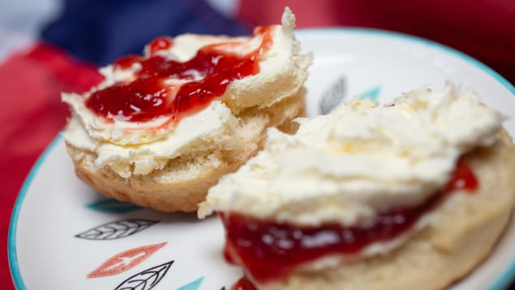

If British food has come in for a bit of mockery over the years, it isn't because the recipes are wrong, it's because they're misunderstood.
We call sausages "toads." We cover offal in gravy, wrap it in pastry and call it a "pudding."
We eat eels! Real, no foolin' eels!
None of it really makes sense to the casual observer. But that's just one of the things that makes British cuisine so special.
Eating British food is not just eating: it is a surrealist expedition into a magical parallel universe that will challenge almost everything your eyes, your palate and your gut know to be right and proper.
These are some of the classic British dishes:
The Full English

We're not about to claim that we're the only nation that eats eggs and fried pork products in some form for breakfast. But we would humbly suggest that we've taken the whole notion of the "cooked breakfast" to more ambitious places than anyone else would probably dare. A proper British fry-up requires more than a plate: it requires a vast platter capable of accommodating not just predictable eggs and banal bacon but their exotic cousins: kidneys, fried bread, a sausage made entirely of blood (see black pudding, below) and a concoction of leftover potatoes and vegetables that we inexplicably call "bubble and squeak."
Scones
History will probably one day reveal that the English Civil War of 1642-1651 was started by two idiots who couldn't agree on whether the jam or cream went on the scone first. This is still a cause of division in the country that makes our bickering over Brexit seem tame and reasonable by comparison.
Christmas pudding

Was it the 18th-century literary giant Dr. Johnson who said that when a man is tired of Christmas pudding, he is tired of life? That said, Johnson suffered terribly from gout.
Scotch egg

An egg wrapped in a sausage. No one knows why or how.
Toad in the hole

Britain's food can be as confusing as its Brexit negotiations. Toad in the hole, for instance, contains zero toads and few holes. Click through the gallery to see more of the country's culinary conundrums.
Yorkshire pudding

If you're going to eat one thing on this plate, make it the chunk of batter on the end.